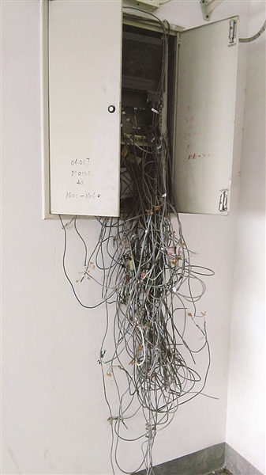
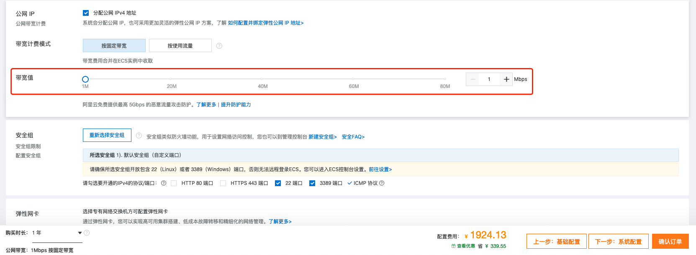
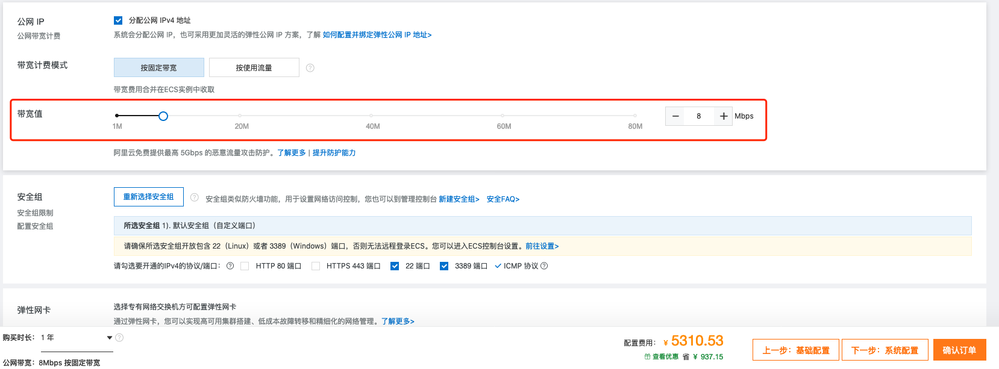
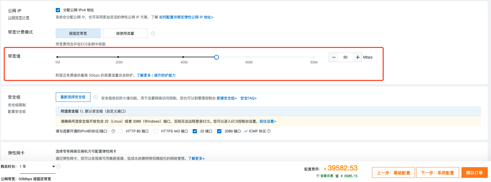

为什么我劝你不要使用云计算？
前言
这是一篇会引起争议的文章，我写下这行字的时候就觉得，如果这篇文章如果有幸被做云计算的大佬看到，一定会顺着网线过来爆锤我。
所以我今天不想说云这个技术的坏话，相反，我是比较期待云技术的，但是我认为云无论是技术上还是商业上都不够成熟，当然，我的见解也有可能是我和我服务的公司体量太小，大公司或许有什么套餐吧（我猜的，但是大公司一般都自己建云了）。
我今天写的文章，和我过去几年的经历稍微有点关系，也就是说，我的历史局限性让我写出了今天这篇心血来潮匪夷所思的文字，大佬轻拍。
正文
和解数学题一样，我来说一下简单情况：
当你的公司体量大到一定程度，就应该自己做云，享受成本价的云和云带来的便利。 事实上，国内一些有头有脸的大公司都是这么做的，其中一些还开放出来卖了，我们接下来说的云，就是这些出来卖的云，比如阿里云腾讯云百度云等等（当然也有专门做云，以云为产品的公司）。
对于剩下的公司，我的建议只有一条：尽量不要上云。
这里的尽量指的是，如果你创业非常初期，每年连在IDC放几个机架的钱都掏不出来，甚至居无定所，那么云是你的唯一选择。
下面就让我简述一下为什么这么做：
云的美
首先说说不得不上云的情况：如上所述的创业初期，其实也是不应该上云的，理论上说只要你有公网IP，是可以直接在家里放个UPS+机架的，这样比上云稳定性差点，但是便宜的多。但是国内大多数宽带是不给你公网IP的。所以你拿到的IP已经是多少层NAT以后了。
有一个特例，我以前在某西部城市办理宽带的时候，上面写着，我们不给你固定IP，如果你需要一个固定的IP，请（要）联（加）系（点）我（钱）们。哪是不给固定IP，压根就没有IP，安装好以后我打开路由器一看，老NAT了。
其实他们就是给我公网IP我也不敢当正经服务器用，因为我们小区楼下的交换机基本是这个状态：

也就比上面这个好点儿，移动联通电信公用一个交换机，从不上锁，师傅来安装的时候一路连插带拔，也不知道多少人闪断了网。
这个时候，云虽然贵，但是给你一种靠谱的感觉，你想象你的服务器会躺在干干净净，恒温18度，控制湿度的空调间里面，除了地震和挖断光纤也不太断网，专业的运维团队为你服务。
这个时候，云还有一些诸如函数计算这样的功能，你连服务器的钱都可以省了，真正的按照运行的量收费，也不操心宕机的问题。
事实上，偶尔会有实习生临时工不小心干掉你的数据，但是这个案例的几率不高，如果你没什么钱的话，没有人会为你写脚本的，所以看上去你可以高枕无忧。
云的坑
下面我说说云的坑：
21世纪什么最贵？人才？不不不，是云上的带宽。
想当年那个西部城市，50M的带宽售价326人民币一年，纵使这个价格乘以一百，也赶不上某里云带宽的价格。 当然你可能会说，上图那种盘丝洞级交换机带来的网络，可以和IDC的专业网络环境比较吗？当然不可以，但是差100多倍真的是超出我的认知了。哪怕我们把云的1bit当1byte来用，那都差了十几二十倍。
NTT的网络套餐，1G的光纤入户，2360日元一个月，有不固定公网IP（重启光猫的时候变化），就我的使用情况来看，和专业的IDC的网络，稳定性也不差多少了。 于是乎我一口气在家里搭建了好几个服务用，连Vultr几刀一个月的主机也不需要买了。 具体搭建了哪些服务可以参考我的blog：互不联网时代的自给自足。
我对比了该云的其他产品的价格，比如数据库之类的，没法儿和Vultr这种专做廉价VPS的厂商比，但是价格和Google，AWS也还算是接轨的。唯独带宽，用金贵两个字形容不过分。



那我不用这个邪恶的某里云不可以吗？当然可以，于是我又去看了某讯云，基本是一样的价格。 某度云我就不看了，账号早在Pandownload的作者被抓之后，我就把用了十几年的老账号注销了。
对比一下，Google的云，带宽是基本不要钱的。
我又看了Azure和AWS，发现都不太能注意到网络相关的设定，更加不会限制带宽。但是由于GFW的存在，国内的业务，尤其是稳定性有要求的业务，并不适合往上放。
我就不对比Vultr这种廉价机场了，和他们比价格太欺负人了。Vultr的总量每月1TB，带宽至少100Mbps的主机才5刀一个月啊，这个配置在国内其实可以应付大部分场景了。
为什么偏偏带宽这么贵？这里是我的个人理解，不一定正确：
因为在中国，大部分互联网生意本质上是 流量生意，我们常常说某头部大V，之所以说的头部评价指标是关注人数，转发量，浏览量点击量。大部分的互联网公司，本质上是广告公司，说来惭愧，我大学时代一直不能理解为啥互联网公司这么关注流量问题，在我幼小的心灵里，流量并不代表着什么，看的人多，不代表这个东西就好，这个是很朴素的道理，事实证明我的确Naive，它们就是广告公司，就看流量，看CTR/CVR，不然呢？看我的腿毛吗？ 要不然就是做O2O的服务，比如打车，或者外卖，然后骑手用户店铺三头收钱，配合一套大数据杀熟，榨干你的最后一滴。 当然也有可能这些都不是，因为也有可能是在骗投资人的钱。
这样看来，某云其实不是在收带宽费用，而是让你为你的业务增长交税，只不过收税的不是国家，是某云。 小带宽（1Mbps）起步，不至于让你的网站起不来就因为钱夭折了，等你业务起来以后，需要大带宽的时候的猛烈收费，知道你业务起来以后不在乎这几万块钱，这种看人下菜的操作，我只能联想到个人所得税。
我为什么认定带宽价格不是移动联通电信的锅呢？毕竟国内也就这三家占了0.999壁江山啊！因为如果你自己有公司办公场所，开通有公网IP的网络并没有那么贵。
除了带宽的价格问题，国内上云的话，被DDOS的概率会比全部自己搞要高的多，可以看我的这个回答：哪些创业公司把服务器放在腾讯云了？有哪些弊端？ - 清雨影的回答 - 知乎
需要说明的是，我并不是说上云就会被DDOS，或者云计算厂商监守自盗，只是我观测到了上云和不上云两个场景下，被DDOS的概率分布有着明显差异，也不知道近几年改善了没有。
总结
看上去我花了很多的篇幅在黑云计算，但是我并不是对云计算这个技术有什么偏见，我觉得王坚博士的《在线》写的很对（虽然此书有打广告的嫌疑），云计算，会成为水电煤一样的基础设施。
但是我们不想为带宽和高防付出太多的成本，但是水污染严重的地方，净水就显得弥足珍贵，雾霾肆虐的地方，空气净化器就十分必要。同样，国内的网络环境让我们不得不承受高昂的带宽价格。
我有一个简单的判断方法，如果某一天，我们可以用不高的成本在云上自己搭建一个网盘（用函数计算连接其它网盘的不算），那么我觉得云计算就慢慢变得成熟了。
真心的希望云有一天能真正成为和水电煤一样的基础设施。
写于 2020年7月19日
As the plugin is integrated with a code management system like GitLab or GitHub, you may have to auth with your account before leaving comments around this article.
Notice: This plugin has used Cookie to store your token with an expiration.